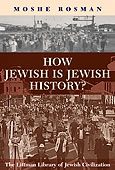

Rethinking European Jewish History
The major cultural, ideological, and social changes that occurred in Europe in the past century have generated widespread reassessment of European history in terms of its presuppositions, its methodologies, its directions, its emphases, and its scope. This timely volume looks at the Jewish past in the spirit of this reassessment. It points to a new framework for the study of Jewish history and helps to contextualize it within the mainstream of historical scholarship.
More info
Europe has changed greatly in the last century—culturally, ideologically, and socially, as well as politically. These changes have generated widespread reassessment of European history in terms of its presuppositions, its methodologies, its directions, its emphases, and its scope. The political boundaries between nations and states have been redefined, and even the concepts of ‘nation’ and ‘boundary’ have changed significantly. The self-consciousness of ethnic minorities has likewise developed in new directions. All these developments have affected how the Jews of Europe perceive themselves, and likewise shape the prism through which historians of the Jewish world view the past.
This volume looks at the Jewish past in the spirit of this reassessment. Part 1 reconsiders basic parameters of the subject as well as some of its fundamental concepts, suggesting new assumptions and perspectives from which to conduct future study of European Jewish history. Topics covered here include periodization and the definition of geographic borders, antisemitism, gender and the history of Jewish women, and notions of assimilation. Part 2 is devoted to articulating the meaning of ‘modernity’ in the history of European Jewry and demarcating key stages in its crystallization. Papers reflect on the defining characteristics of a distinct early modern period in European Jewish history, the Reformation and the Jews, and the essence of the Jewish experience in modern times. Framing the chronological period of concern in the collection, Parts 3 and 4 facilitate two scholarly conversations as case studies for the application of critical and programmatic categories considered thus far: the complex web of relationships between Jews, Christians, and Jewish converts to Christianity (conversos, New Christians, ‘Marranos’) in fifteenth-century Spain; and the impact of American Jewry on Jewish life in Europe in different periods of the twentieth century, even as the dominant trend has been one of migration from Europe to the Americas.
This timely volume suggests a new framework for the study of Jewish history and helps to contextualize it within the mainstream of historical scholarship.
About the author
Jeremy Cohen holds the Abraham and Edita Spiegel Family Foundation Chair for European Jewish History at Tel Aviv University, where he served as Director of the Goldstein-Goren Diaspora Research Center between 2002 and 2005. A specialist in the history of Jewish–Christian relations and three times a winner of the National Jewish Book Award, his various publications include The Friars and the Jews: The Evolution of Medieval Anti-Judaism (1982), Living Letters of the Law: Ideas of the Jew in Medieval Christianity (1999), and Christ Killers: The Jews and the Passion from the Bible to the Big Screen (2007).
Moshe Rosman is Professor of Jewish History at Bar Ilan University in Israel. He has been a Fulbright-IREX fellow, a fellow of the Hebrew University's Institute for Advanced Studies and the University of Pennsylvania's Katz Center for Advanced Judaic Studies, winner of the National Jewish Book Award (1996, 2009), the Zalman Shazar Prize (2000), the Jerzy Milewski Award (2000), and the Jordan Schnitzer Award (2010), and visiting professor at Yale and other universities. Professor Rosman has conducted extensive archival research in eastern Europe and specializes in integrating Jewish, Polish, and other sources. His previous books include The Lords' Jews: Jews and Magnates in the Polish-Lithuanian Commonwealth and Founder of Hasidism: A Quest for the Historical Ba'al Shem Tov (the second edition of which is published in paperback by the Littman Library). He is one of the principal authors of the forthcoming A New History of Hasidism.
Contributors
Ram Ben-Shalom, Miriam Bodian, Jeremy Cohen, Judah M. Cohen, David Engel, Gershon
David Hundert, Paula Hyman, Maud Mandel, David Nirenberg,
Moshe Rosman, David B. Ruderman, Daniel Soyer
Contributor information
Miriam Bodian, Professor of Jewish History, Graduate School of Jewish Studies, Touro College, New York
Jeremy Cohen, Abraham and Edita Spiegel Family Foundation Professor of European Jewish History, University of Tel Aviv
Judah M. Cohen, Lou and Sybil Mervis Professor of Jewish Culture and Assistant Professor of Folklore and Ethnomusicology, Indiana University
David Engel, Greenberg Professor of Holocaust Studies, Professor of Hebrew and Judaic Studies, and Professor of History; New York University; Fellow, Goldstein-Goren Diaspora Research Center, University of Tel Aviv
Gershon David Hundert, Professor of History and Leanor Segal Professor of Jewish Studies, McGill University.
Paula Hyman, Lucy G. Moses Professor of Modern Jewish History, Yale University
Maud Mandel, Associate Professor of History and Judaic Studies, Brown University
David Nirenberg, Professor, Committee on Social Thought and Department of History, University of Chicago
Moshe Rosman, Professor of Jewish History, Bar-Ilan University
David B. Ruderman, Joseph Meyerhoff Professor of Modern Jewish History and Ella Darivoff Director, Center for Advanced Judaic Studies, University of Pennsylvania
Daniel Soyer, Associate Professor of History, Fordham University, New York
Contents
Note on Transliteration
Jeremy Cohen: Introduction
Part I Reorienting The Narrative
1 Moshe Rosman: Jewish History Across Borders
2 David Engel: Away from a Definition of Antisemitism: An Essay in the Semantics of Historical Description
3 Paula Hyman: Does Gender Matter? Locating Women in European Jewish History
4 Maud Mandel: Assimilation and Cultural Exchange in Modern Jewish History
Part II From the Middle Ages to Modernity
5 David B. Ruderman: Jewish Culture in Early Modern Europe: An Agenda for Future Study
6 Miriam Bodian: The Reformation and the Jews
7 Gershon David Hundert: Re(de)fining Modernity in Jewish History
Part III On the Eve of the Spanish Expulsion
8 David Nirenberg: Spanish ‘Judaism’ and ‘Christianity’ in an Age of Mass Conversion
9 Ram Ben-Shalom: The Social Context of Apostasy in Fifteenth-Century Spanish Jewry: Dynamics of a New Religious Borderland
PART IV
FROM EUROPE TO AMERICA AND BACK
10 Daniel Soyer: Transnationalism and Mutual Influence: American and East European Jewries in the 1920s and 1930s
11 Judah M. Cohen: Transplanting the Heart Back East: Returning Jewish Musical Culture from the United States to Europe
Notes on Contributors
Index
Reviews
'Many of the studies in this volume will surely serve as points of departure for future research.'
Gil Ribak, H-Judaic
'The methodological questions [the contributors] raise have serious implications for the way we understand ourselves as Jews today.'
Adam Kirsch, Tablet Magazine
272 pages, 5 illustrations
ISBN: 978-1-904113-56-0
Hardback out of print
978-1-906764-54-8
£16.95 / $27.95 paperback
Published 27 November 2008
6 March 2014 paperback
Other books by these authors:

How Jewish is Jewish History?
Moshe Rosman

The Jewish Contribution to Civilization
Jeremy Cohen and Richard I. Cohen

Founder of Hasidism
A Quest for the Historical Ba'al Shem Tov
Moshe Rosman
Thinking about Polish Jewish History
Moshe Rosman